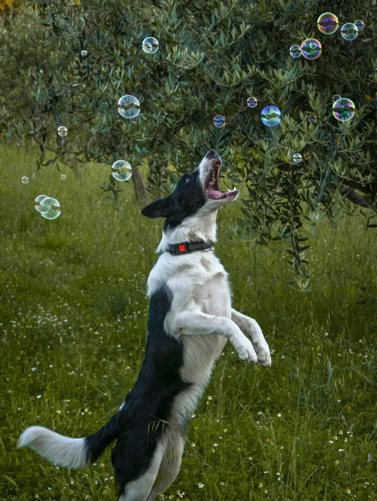

Best Leashes for Dogs That Pull

No leash, on its own, will fix a dog that pulls — that's a training job (our guide to stopping leash pulling covers it). But the right leash makes that training so much easier to actually stick with, and the wrong one can quietly undo good technique through nothing more than a bad physical mismatch.
This guide may contain affiliate links. If you buy something through one, we may earn a commission at no extra cost to you. See our Terms of Use for details.
Length
A standard 6-foot leash is the right default for a dog that pulls — long enough for normal movement, short enough to give you fast, precise control. Retractable leashes actively work against pulling-focused training: the constant tension-release mechanism teaches a dog that pulling extends their range, which is exactly the opposite lesson you're trying to teach.
Material and grip
A padded handle matters more than it sounds like it would — a strong, sudden pull on a thin nylon strap can cause real hand or wrist strain over repeated walks. Look for a handle with cushioning or a comfortable grip width, especially if you're managing a large or consistently strong-pulling dog.
Nylon is the standard, affordable choice and holds up well for most dogs. Leather softens and becomes more comfortable over time but costs more upfront and needs occasional conditioning. Biothane (a coated webbing material) is increasingly popular for strong pullers — it doesn't fray, cleans easily, and holds up well to repeated tension.
Double-handle leashes
A leash with a second handle positioned closer to the collar gives you an extra point of quick control in tight spaces (crossing a street, passing another dog) without needing to shorten your grip on the main handle. Genuinely useful for a strong puller in unpredictable environments like busy sidewalks.
Hands-free options
A waist-belt leash can work well for consistent, predictable walkers, but isn't a great match for a dog still actively working on leash manners — you lose the fine-grained, moment-to-moment control that training a strong puller usually requires in the early stages.
What to avoid
Chain leashes look durable but are heavy, hard on the hands, and offer no functional advantage over a well-made nylon or biothane leash for pulling specifically. Extremely thin, ultra-lightweight leashes marketed for small dogs can be a poor match for a small dog that pulls hard relative to their size — thin material concentrates force uncomfortably on your hand.